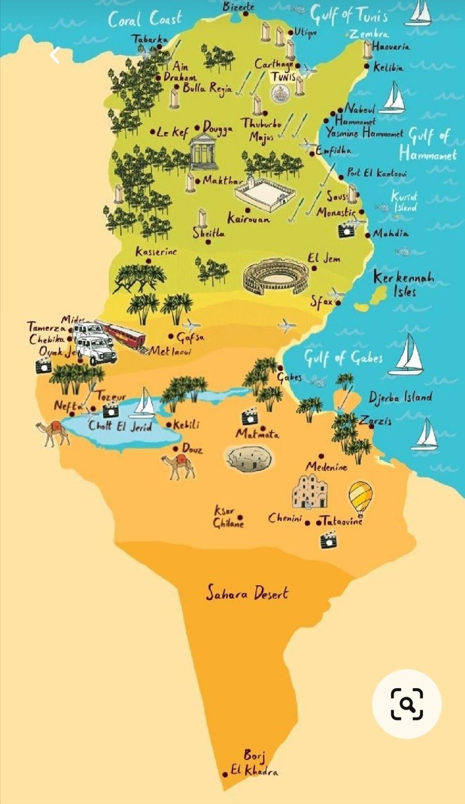

Patrimoine Tunisien
Un Patrimoine Riche et Diversifié
La Tunisie possède un patrimoine exceptionnel, témoin de son histoire millénaire. Des sites archéologiques romains aux médinas classées par l'UNESCO, découvrez les trésors historiques et culturels de notre pays.

Carthage
Site Archéologique
Tunis
Ancienne cité punique et romaine, Carthage est classée au patrimoine mondial de l'UNESCO. Découvrez les thermes d'Antonin, le théâtre romain et le musée national.
3h de visite
Entrée payante

Médina de Tunis
Centre Historique
Tunis
La médina de Tunis, classée UNESCO, est un labyrinthe de ruelles où se mêlent souks traditionnels, mosquées historiques et palais ottomans.
2h de visite
Entrée libre

Dougga
Site Romain
Béja
Considérée comme la ville romaine la mieux préservée d'Afrique du Nord, Dougga abrite un théâtre, un capitole et des thermes exceptionnels.
4h de visite
Entrée payante
Carte du Patrimoine

Anecdotes du patrimoine
- Le site de Dougga est surnommé la "Pompéi d'Afrique" pour son état de conservation exceptionnel.
- La Médina de Tunis compte plus de 700 monuments historiques, dont des palais, mosquées et fontaines.
- Les ksour du sud tunisien servaient autrefois de greniers collectifs et de refuges contre les invasions.